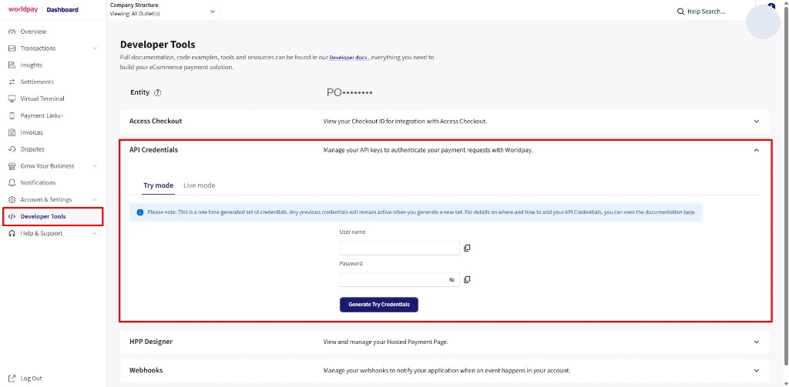
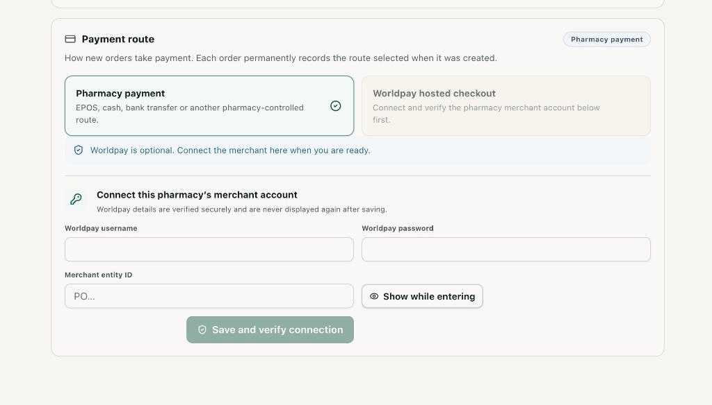

This guide connects your pharmacy’s own Worldpay merchant account, switches new orders onto hosted checkout, and proves the connection with one small live payment.
Have these ready
The Worldpay dashboard login for this pharmacy’s merchant account.
Someone who can open Settings & Assets in Holistic Health Hub.
Your Worldpay Implementation Manager’s contact, for the payment-update address.
One small real order you are willing to pay and then refund.
You will copy three values
Entity, which starts with PO
Live API username
Live API password
Nothing else from the Worldpay dashboard is entered into Holistic Health Hub.
Card numbers are typed on Worldpay’s page, not into Holistic Health Hub. The money settles to this pharmacy’s Worldpay account. 3 October 2026.
1. What you are setting up
Each pharmacy has its own Worldpay account. Holistic Health Hub uses that account to open a hosted payment page for an order. The patient pays Worldpay. Holistic Health Hub then checks the payment with Worldpay before the order can show as paid.
Until this connection is verified, new orders stay on Pharmacy payment: EPOS, cash, or bank transfer. Worldpay hosted checkout stays locked.
Use the live API username and password. Not your dashboard login.
The username and password you type to open Worldpay will be refused. A single API key will be refused. The Checkout ID under Access Checkout is not used.
2. Copy these three values, and only these
Worldpay · Developer ToolsEntity
Worldpay · API Credentials · Live modeUser name
Worldpay · API Credentials · Live modePassword
→
→
→
Settings · Payment routeMerchant entity ID
Settings · Payment routeWorldpay username
Settings · Payment routeWorldpay password
The entity starts with PO. The same entity is used for Try and Live. The username and password are not the same in Try and Live. For a pharmacy taking real card payments, generate the Live pair.
3. In the Worldpay dashboard
1
Sign in to the Worldpay dashboard for this pharmacy.
Use the merchant account that will receive the card payments. Do not use a personal login from another business.
2
In the left menu, open Developer Tools.
3
Copy the Entity at the top of the page. It starts with PO.
In this guide the real value is hidden. Yours will be a PO number with a copy button beside it.
4
Open API Credentials.
5
Select Live mode, then generate the credentials and copy the username and password immediately.
They are shown once. Generating another set does not switch off the previous set. If you miss them, generate again and use the new pair.

Developer Tools. The red outlines are on the menu item and on API Credentials. This picture is still on Try mode. Click Live mode before you generate credentials for a pharmacy that will take real payments. Leave Access Checkout and HPP Designer closed.
The picture above is the practice tab.
Try credentials connect, and Holistic Health Hub will label the connection Try. They cannot take a patient’s real card payment. Live mode uses a different username and password. The entity stays the same.
4. Paste them into Holistic Health Hub
6
In the pharmacy workspace, open Settings & Assets.
7
On Payment route, paste the three values into Connect this pharmacy’s merchant account.
8
Press Show while entering and check the password was pasted in full. It needs at least 8 characters.
9
Press Save and verify connection. Wait until it finishes. Do not paste the values a second time while it is checking.

Settings & Assets, before a connection exists. Worldpay hosted checkout is locked until verification succeeds. Pharmacy payment stays selected, which is correct at this point.
The password is not shown again after a successful save.
To replace it later, use Rotate credentials on the same card. Remove connection stops new orders from using Worldpay. An order already sent for payment is not cancelled by removing the connection.
5. What a successful connection looks like
Illustration of the screen after verification. Your date and masked entity will differ.
Payment route
How new orders take payment.
Worldpay
Pharmacy paymentEPOS, cash, bank transfer, or another pharmacy-controlled route.
Worldpay hosted checkoutVerified merchant connection. Settlement goes directly to this pharmacy.
EnvironmentLive
Last verifiedToday, after you save
Merchant entityPO••••
The card also shows Connected, plus Refresh status, Rotate credentials, and Remove connection.
10
Check Environment says Live.
If it says Try, you saved Try credentials. Generate the Live pair and use Rotate credentials.
11
Select Worldpay hosted checkout.
That choice is the default for new orders. An order already created keeps the route it was given.
6. Ask Worldpay to send payment updates
Holistic Health Hub can check a payment itself, but the usual path is a webhook: Worldpay tells us a payment changed, and we then confirm the amount, currency, and entity with the username and password you saved. A webhook on its own never marks an order paid.
Ask your Worldpay Implementation Manager to register this address for the pharmacy’s merchant account:
You do not put this address into Holistic Health Hub.
It is registered on the Worldpay side. If you cannot see Webhooks in the dashboard, the Implementation Manager still needs to register the address. Do not invent a different URL.
7. Prove it with one small live payment
Use a real order for a small amount you can refund afterwards. Do not type a card number into Holistic Health Hub.
1 · OrderCreate the order in the usual way. On the payment step, choose Worldpay.
2 · LinkPress Send payment link. The secure link is copied. The patient pays on Worldpay’s page.
3 · PayComplete that one payment. You should see Worldpay’s own card page, with no card fields inside Holistic Health Hub.
4 · PaidReturn to the order. It should show Paid once Worldpay has confirmed it. Then refund that test payment in the normal way.
Stop if the order does not show Paid.
Do not send a second payment link for the same order until you know the first payment failed or was cancelled in Worldpay. Taking a second card payment can charge the patient twice.
If the order stays waiting, open Settings & Assets and press Refresh status. A successful connection can still be waiting on the webhook from section 6. The order is paid only after Holistic Health Hub has checked the payment with Worldpay.
8. If it does not verify
What you see
What to do
Worldpay did not authorise this username and password.
You pasted the dashboard login, an API key, or a username from the wrong mode. Go back to Developer Tools, open Live mode, and copy the API username and password again, with the PO entity from the same page.
The password needs at least 8 characters.
The paste was cut short. Show the password while entering and paste it again.
Environment says Try.
Try credentials were saved. Generate Live credentials and use Rotate credentials.
Worldpay hosted checkout stays locked.
Verification has not succeeded yet. The form in section 4 is still the right place. Pharmacy payment remains the route until it does.
The connection verified, but the test order never shows Paid.
Confirm the webhook address and the five events in section 6. Refresh the order once. Do not create a second card payment for that order.
9. Tick this before you call it live
Entity, live username, and live password were copied from Developer Tools. The dashboard login was not used.
Save and verify connection succeeded.
Environment says Live, and the merchant entity is masked on screen.
Worldpay hosted checkout is selected on Payment route.
The Implementation Manager has registered the webhook address, and the five events are on.
One small live payment shows Paid on the order.
That test payment has been refunded.
Record for this pharmacy
Date connected
Connected by
Environment confirmed Live
Test order reference
Test payment refunded
Leave these alone
Access Checkout and its Checkout ID
HPP Designer, unless you are only changing how the payment page looks
Any API key that is not a username and password pair